A3(8)≥52
A3(9)≥74
A3(10)≥106
Problem #1:
Assume we have squares with sides 1, 2, 3, . . . n of fixed thickness 1. By stacking them flat, what is the largest connected area Ak(n) of height k that we can produce? Each square must either be on the lowest level or be fully supported by one or more squares below. What are the values of Ak(n) for large k and n?
Problem #2:
Assume we have a bunch of cubes of side 1. We want to stack them so that for every i, the boundary of level i+1 is contained within the interior of the boundary of level i. What is the fewest number of cubes Ck(n) that we need to have n cubes on level k? What are the values of Ck(n) for large k and n?
Since the combined area of squares of sides 1 through n is n(n+1)(2n+1)/6, an upper bound is Ak(n) ≤ Sk(n) = n(n+1)(2n+1)/6k.
David Bevan defined the waste w2(n)=2[S2(n)–A2(n)], the area of the lower layer not covered by the upper layer. He showed how to build a cell, 8 consecutive squares placed so that the waste is exactly 16. From this he gets the lower bound A2(n) ≥ S(n)–n+4 for n≥8.
He improves this by showing how to build a supercell, 40 consecutive squares made from 5 cells with a waste of exactly 48. From this he gets a better lower bound A2(n) ≥ S2(n)–(3n+48)/5 for n≥40.
| k \ n | 1 | 2 | 3 | 4 | 5 | 6 | 7 | 8 | 9 | 10 | 11 | 12 | 13 | 14 | 15 |
|---|---|---|---|---|---|---|---|---|---|---|---|---|---|---|---|
| 2 | 0 | 1 | 5 | 10 | 21 | 41 | 65 | 98 | 138 | 187 | 247 | 318 | 403 | 500 | 611 |
| 3 | 0 | 0 | 1 | 5 | 10 | 17 | 30 | 52 | 74 | 106 | 146 | ||||
| 4 | 0 | 0 | 0 | 1 | 5 | 10 | 17 | 26 | 41 | 65 | 89 |
A2(1)=0 | A2(2)=1 | 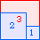 A2(3)=5 | 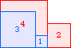 A2(4)=10 | 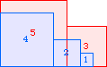 A2(5)=21 | 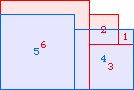 A2(6)=41 |
| 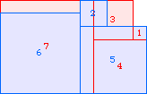 A2(7)≥65 | 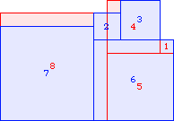 A2(8)≥98 (David Cantrell) | 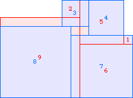 A2(9)≥138 |
| 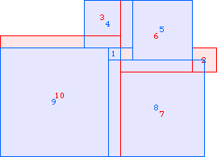 A2(10)≥187 | 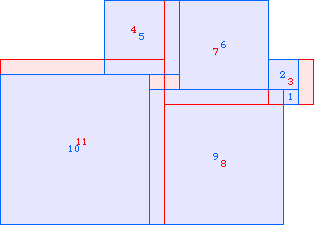 A2(11)≥247 |
| 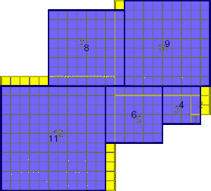 A2(12)≥318 (David Bevan) | 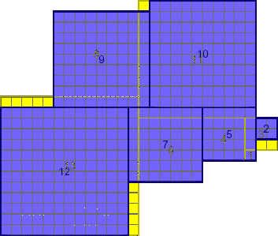 A2(13)≥403 (David Bevan) |
| 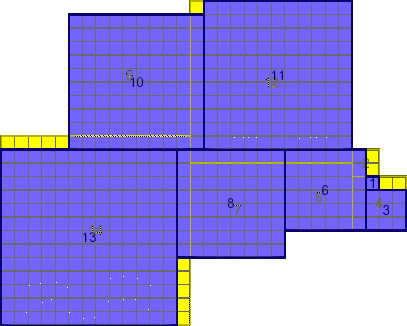 A2(14)≥500 (David Bevan) |
| 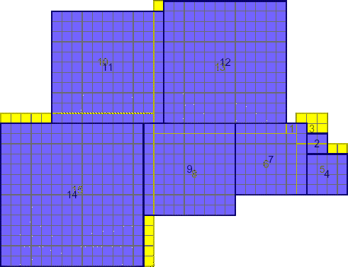 A2(15)≥611 (David Bevan) |
| 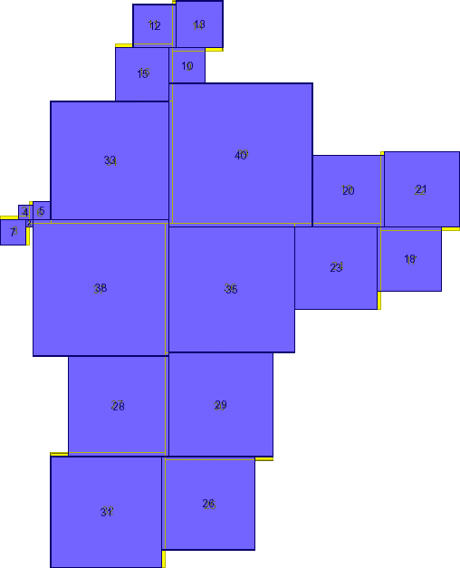 A2(40)≥22116 (David Bevan) |
A3(1)=0 | A3(2)=0 | 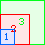 A3(3)=1 | 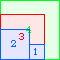 A3(4)=5 | 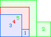 A3(5)=10 | 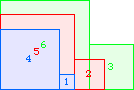 A3(6)=17 | 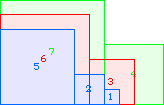 A3(7)=30 |
A3(8)≥52 | 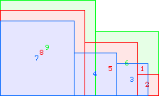 A3(9)≥74 | 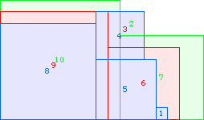 A3(10)≥106 |
| 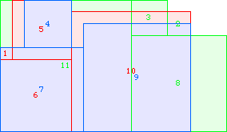 A3(11)≥146 |
A4(1)=0 | A4(2)=0 | 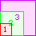 A4(3)=0 | 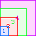 A4(4)=1 | 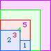 A4(5)=5 | 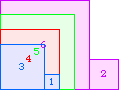 A4(6)=10 | 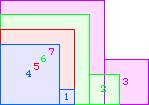 A4(7)=17 | 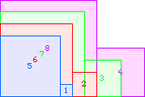 A4(8)=26 |
| 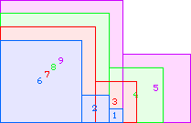 A4(9)=41 | 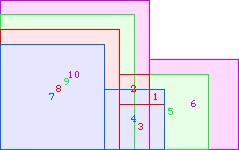 A4(10)≥65 | 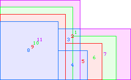 A4(11)≥89 |
Problem #2:
David Cantrell and Berend van der Zwaag sent several solutions.
By building pyramids in which every level is a square, we get the upper bound Ck(n2) ≤ n2 + (n+1)2 + . . . + (n+k-1)2 = kn(n+k-1) + k(k–1)(2k–1)/6.
| k \ n | 1 | 2 | 3 | 4 | 5 | 6 | 7 | 8 | 9 | 10 | 11 | 12 |
|---|---|---|---|---|---|---|---|---|---|---|---|---|
| 2 | 4 | 6 | 9 | 11 | 13 | 15 | 17 | 20 | 22 | 24 | 26 | 28 |
| 3 | 10 | 13 | 19 | 21 | 26 | 29 | 31 | |||||
| 4 | 20 | 24 | 33 | 35 |
| 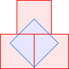 C2(1)=4 | 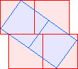 C2(2)=6 Berend van der Zwaag | 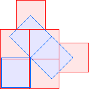 C2(3)≤9 | 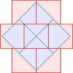 C2(4)≤11 Berend van der Zwaag | 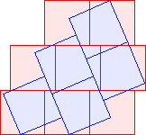 C2(5)≤13 David Cantrell |
| 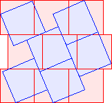 C2(6)≤15 | 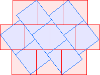 C2(7)≤17 Berend van der Zwaag | 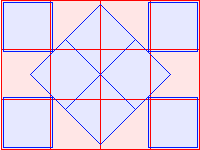 C2(8)≤20 David Cantrell | 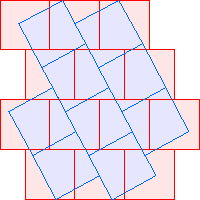 C2(9)≤22 |
| 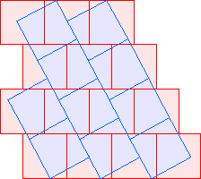 C2(10)≤24 | 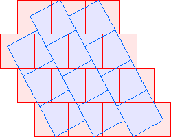 C2(11)≤26 | 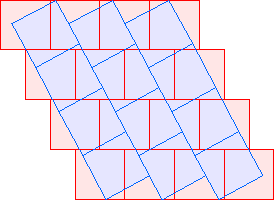 C2(12)≤28 |
| 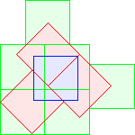 C3(1)≤10 David Cantrell | 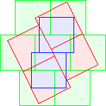 C3(2)≤13 David Cantrell | 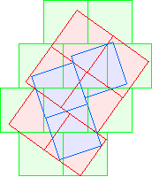 C3(3)≤19 Berend van der Zwaag | 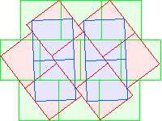 C3(4)≤21 Berend van der Zwaag |
| 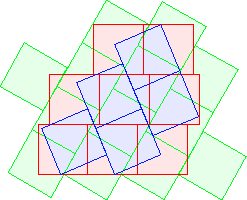 C3(5)≤26 David Cantrell | 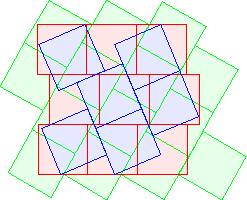 C3(6)≤29 David Cantrell | 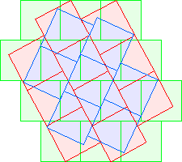 C3(7)≤31 |
C4(1)≤20 Berend van der Zwaag | C4(2)≤24 Berend van der Zwaag | C4(4)≤35 |
| k \ n | 1 | 2 | 3 | 4 | 5 | 6 |
|---|---|---|---|---|---|---|
| 2 | 3 | 5 | 7 | 9 | 11 | 13 |
| 3 | 6 | 9 | 12 | 15 | ||
| 4 | 10 | 14 |
T2(1)=3 | T2(2)=5 | T2(3)=7 | T2(4)=9 | T2(5)=11 | T2(6)=13 |
T3(1)=6 | T3(2)=9 | T3(3)=12 David Cantrell | T3(4)=15 David Cantrell |
T4(1)=10 David Cantrell | T4(2)=14 David Cantrell |